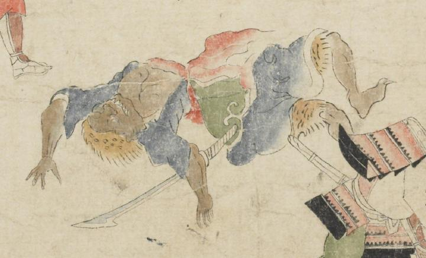

茶色の肌の鬼。鼻が横に広がり、上顎から鋭い歯を覗かせている。毛皮を頭部に巻き、青い着物を着て、裾から毛皮を覗かせている。腹部を切られて、血を流し、仰向けに倒れている。
著作者：坂本弥一郎徳定／出典：親書誌：U426_nichibunken_0080：伊吹山酒呑童子絵巻；イブキヤマシュテンドウジエマキ／日付：2007／資源識別子：U426_nichibunken_0080_0014_0006
Copyright (c)2010- International Research Center for Japanese Studies, Kyoto, Japan. All rights reserved.